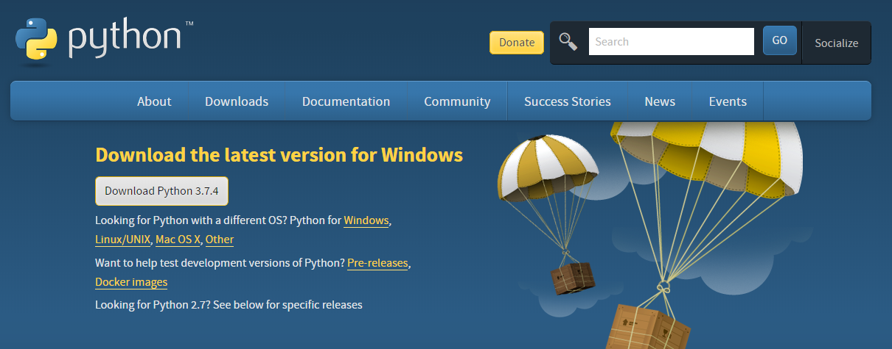
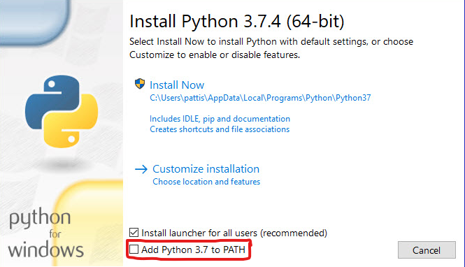
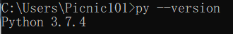
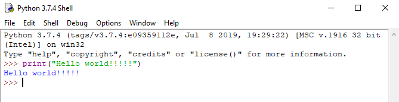

Installation (การติดตั้ง)
ในการติดตั้งภาษา Python นั้นง่ายมากๆเลยครับวิธีการคือให้เราเข้าไปที่เว็บไซต์ python.org ครับจากนั้นไปที่หน้า Download และเลือกเวอร์ชั่นและระบบปฏิบัติการที่ต้องการครับ (เนื้อหาในเว็บไซต์นี้จะเป็น Python 3.7.4)
ในขั้นตอนการติดตั้งนั้นให้เราติ้กช่องที่เขียนไว้ว่า "Add Python 3.7 to PATH" ครับเพื่อที่จะทําให้เราสามารถเรียกใช้ Python ผ่านทาง CMD ของเราได้ครับจากนั้นก็กดที่ "Install Now" ได้เลยครับ
หลังจากเราติดตั้งเรียบร้อยแล้วเราสามารถทดสอบได้ครับว่าเราได้ติดตั้ง Python แล้วหรือยังด้วยการเปิด CMD ครับแล้วพิมพ์คําว่า "py --version" ครับ
จะเห็นว่าเราได้รับข้อความ "Python 3.7.4" ซึ่งก็คือเราได้ติดตั้ง Python เรียบร้อยแล้วครับ
การใช้งานภาษา Python
ในการทํางานของภาษา Python นั้นจะมีหลักๆอยู่ 2 วิธีตามนี้เลยครับ
- Interactive Mode คือการที่เราพิมพ์ Code ที่ต้องการจะรันในแต่ละบรรทัดและผลลัพธ์ก็จะออกมาตามแต่ละบรรทัดครับ
- Script Mode คือการที่เรามีไฟล์ Python (.py) ที่เป็นโค้ดแล้วนํามารันครับ
การใช้งาน Interactive Mode ง่ายๆเลยครับเราก็เปิด CMD หรือจะเข้าตัว IDLE ที่มีมาให้หลังจากติดตั้ง Python แล้วก็ได้ครับ

การใช้งาน Script Mode เราสามารถทําได้โดยการเปิด CMD ครับและไปที่ Directory ที่ไฟล์ของเราอยู่จากนั้นให้เราพิมพ์ "py -3 <ชื่อไฟล์>.py" ครับจากนั้น Python ก็จะนําโค้ดที่อยู่ข้างในไฟล์นั้นมารันซึ่ง หากเราใช้ IDLE ของ Python ก็สามารถรันได้โดยการกด F5 ครับ


การใช้งาน CMD
จะมีคําสั่งคร่าวๆประมาณนี้ครับ
- คําสั่ง dir จะแสดงไฟล์หรือโฟลเดอร์ที่อยู่ในตําแหน่งที่เราอยู่ครับ
- คําสั่ง cd จะเป็นการย้ายตําแหน่งเข้าไปในโฟลเดอร์หรือตําแหน่งที่เราต้องการครับ
- คําสั่ง cd.. จะเป็นการย้อนกลับไปโฟลเดอร์หรือตําแหน่งก่อนหน้าครับ

จากรูปคือผมมีไฟล์ที่ต้องการจะรันอยู่ที่ desktop ครับผมก็เลยใช้ cd ย้าย ไปที่ desktop แล้วจึงค่อยพิมพ์ใช้งาน Python ครับ